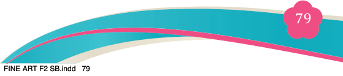
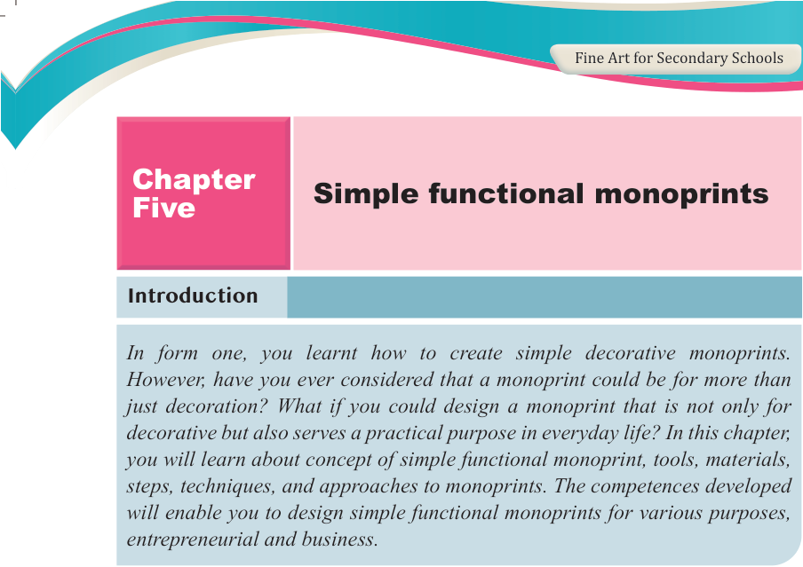

Introduction
In form one, you learnt how to create simple decorative monoprints.
However, have you ever considered that a monoprint could be for more than just decoration? What if you could design a monoprint that is not only for decorative but also serves a practical purpose in everyday life? In this chapter,

you will learn about concept of simple functional monoprint, tools, materials, steps, techniques, and approaches to monoprints. The competences developed will enable you to design simple functional monoprints for various purposes, entrepreneurial and business.
Think

The inspiration of functional monoprint images.
Concept of simple functional monoprints
Simple functional monoprint is a type of printmaking where a single or a unique image is created using different printing techniques. What makes it functional is
that it is created for decorative visual appeal as well as serves a particular purpose
in daily life such as on clothing, bags, notebooks, packaging or household items.
Monoprint involves applying ink, dye or paint onto a surface such as a plate, fabric, or paper. The image is then transferred by hand or with a printing press to an intended surface. This technique encourages creativity and allows an artist to explore different textures, colours and designs, resulting in bold and expressive work. Because no two prints are exactly the same, each product is unique.
Significance of simple functional monoprints
Simple functional monoprints are used in various real-life applications, combining
creativity with practice. Although they are not usually classified into specific types,
they can be grouped according to the functions they serve. Some common places where functional monoprints can be used include fashion and textile monoprints
Artists can use monoprints to design various clothing or accessories in fashion or
textiles. Examples of these items are such as T-shirts, dresses, pendant, bags, hats,
Chapter
Five
Simple functional monoprints